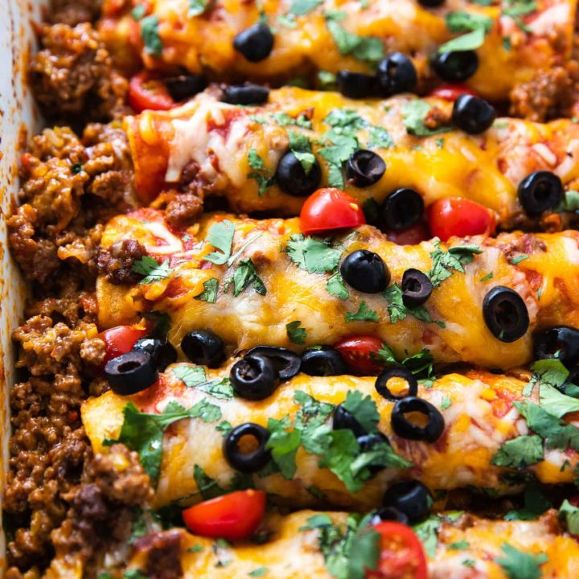

Beef Enchiladas

Description
Delicious mexican dish that consists of a tortilla rolled around
a meat, bean, or cheese filling and covered with a sauce. This recipe
serves eight.
Ingredients
- 2 pounds groud beef
- 1/4 onion, finely chopped
- 1 cup shredded Cheddar cheese
- 1/2 cup sour cream
- 1 tablespoon dried parsley
- 1 tablespoon taco seasoning
- 1 teaspoon dried oregano
- 1/2 teaspoon ground black pepper
- 21/2 cups enchilada sauce
- 11/2 teaspoons chili powder
- 1 clove garlic, minced
- 1/2 teaspoon salt
- 8 flour torillas
- 1 (15 ounce) can black beans, rinsed and drained
- 1 (4 ounce) can sliced black olives, drained
- 1/4cup shredded Cheddar cheese
Steps
- Preheat oven to 350 degrees F (175 degrees C).
- Cook and stir ground beef with onion in a skillet over
medium heat until meat is crumbly and no longer pink,
about 10 minutes. Drain grease. Stir 1 cup Cheddar cheese,
sour cream, parsley, taco seasoning, oregano, and black pepper
into the ground beef until cheese has melted.
Mix in enchilada sauce, chili powder, garlic, and salt;
bring to a simmer, reduce heat to low, and simmer until
meat sauce is slightly thickened, about 5 minutes.
- Lay a tortilla onto a work surface and spoon about 1/4 cup of meat sauce down the center of the tortilla.
Top meat sauce with 1 tablespoon black beans and a sprinkling of black olives.
Roll the tortilla up, enclosing the filling, and lay seam-side down into a 9x13-inch baking dish.
Repeat with remaining tortillas. Spoon any remaining meat sauce over the enchiladas
and scatter any remaining black beans and black olives over the top. Sprinkle tortillas with 1/4 cup Cheddar cheese.
- Bake in the preheated oven until cheese topping is melted and enchiladas and sauce are bubbling, 20 to 22 minutes. Let stand 5 minutes before serving.